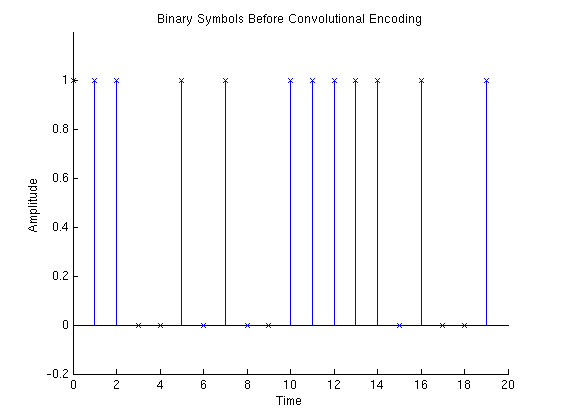

This demo shows how to use a convolutional encoder and decoder in a simulation of a communications link. It also shows the error correcting capability of convolutional codes. This demonstrates the convolutional trellis generator, POLY2TRELLIS, encoder, CONVENC, and decoder, VITDEC. It also demonstrates the use of PSKMOD, PSKDEMOD, INTDUMP, RECTPULSE, BITERR, BERCODING, RANDSRC, and AWGN, etc. The latter functions are described in greater detail in the "Simulation of Phase Shift Keying in Gaussian noise" demo. Finally, this demo displays empirical performance curves for QPSK with Gray coding using data generated by the example, VITSIMEXAMPLE.
This demo shows how to simulate a QPSK communication system, and compares the error correction capabilities of convolutional encoding with the union bound performance estimates shown here. Use POLY2TRELLIS to generate the trellis of convolutional encoder with G = [171 133]. Calculate the distance spectrum with DISTSPEC, and the BER upper bound with BERCODING.
EbN0 = 4.5:.5:7; linEbN0 = 10.^(EbN0(:).*0.1); M = 4; codeRate = 1/2; constlen = 7; k = log2(M); codegen = [171 133]; tblen = 32; % traceback length trellis = poly2trellis(constlen, codegen); dspec = distspec(trellis, 7); expVitBER = bercoding(EbN0, 'conv', 'hard', codeRate, dspec); semilogy(EbN0, expVitBER, 'g'); xlabel('Eb/No (dB)'); ylabel('BER'); title('Performance for R=1/2, K=7 Conv. Code and QPSK with Hard Decision'); grid on; axis([4 8 10e-7 10e-3]); legend('Union Bound', 0);
First start by setting parameters needed for the simulation. Then generate binary data using RANDSRC. The first 20 points of this data are plotted here.
numSymb = 100; numPlot = 20; Nsamp = 4; % oversampling rate EbN0Demo = 3; EsN0 = EbN0Demo + 10*log10(k); seed = [654321 123456]; rand('state', seed(1)); randn('state', seed(2)); msg_orig = randsrc(numSymb, 1, 0:1); stem(0:numPlot-1, msg_orig(1:numPlot),'bx'); axis([ 0 numPlot -0.2 1.2]); xlabel('Time'); ylabel('Amplitude'); title('Binary Symbols Before Convolutional Encoding' ); legend off
Use CONVENC to encode the information symbols. This plot shows the coded symbols. Note that the encoded symbol rate is twice the information symbol rate.
[msg_enc_bi] = convenc(msg_orig, trellis); numEncPlot = numPlot / codeRate; tEnc = (0:numEncPlot-1) * codeRate; stem(tEnc, msg_enc_bi(1:length(tEnc)),'rx'); axis([min(tEnc) max(tEnc) -0.2 1.2]); xlabel('Time'); ylabel('Amplitude'); title('Binary Symbols After Convolutional Encoding' );
Use BI2DE to convert the coded information to quarternary alphabet. Then generate an encoding array and use it to Gray-encode the symbols. Then use PSKMOD to Quaternary PSK (QPSK) modulate the signal, and RECTPULSE to implement pulse shaping. Then use AWGN to add noise to the transmitted signal to create the noisy signal at the receiver. The term, -10*log10(Nsamp), is used to scale the noise power with the oversampling. The term, -10*log10(1/codeRate), is used to scale the noise power to match the coded symbol rate. The in-phase and quadrature components of the noiseless QPSK signal are plotted.
randn('state', seed(2)); msg_enc = bi2de(reshape(msg_enc_bi, ... size(msg_enc_bi,2)*k,size(msg_enc_bi,1) / k)'); grayencod = bitxor(0:M-1, floor((0:M-1)/2)); msg_gr_enc = grayencod(msg_enc+1); msg_tx = pskmod(msg_gr_enc, M, pi/4); msg_tx = rectpulse(msg_tx, Nsamp); msg_rx = awgn(msg_tx, EsN0-10*log10(1/codeRate)-10*log10(Nsamp)); numModPlot = numEncPlot * Nsamp ./ k; tMod = (0:numModPlot-1) ./ Nsamp .* k; plot(tMod, real(msg_tx(1:length(tMod))),'c-', ... tMod, imag(msg_tx(1:length(tMod))),'m-'); axis([ min(tMod) max(tMod) -1.5 1.5]); xlabel('Time'); ylabel('Amplitude'); title('Encoded Symbols After QPSK Baseband Modulation'); legend('In-phase', 'Quadrature', 0);
Use INTDUMP and PSKDEMOD to demodulate and detect the coded symbols. Then sort the gray encoding array to generate the gray decoding array and use the gray decoding array to decode the received symbols. Then use DE2BI to convert the data to binary form. The detected symbols are plotted in blue stems with circles and the original encoded symbols are plotted in red stems with x's. The red stems of the transmitted signal are shadowed by the blue stems of the received signal. Therefore, comparing the red x's with the blue circles indicates that the received signal is identical to the transmitted signal except for symbol at time 17.
msg_rx_int = intdump(msg_rx, Nsamp); msg_gr_demod = pskdemod(msg_rx_int, M, pi/4); [dummy graydecod] = sort(grayencod); graydecod = graydecod - 1; msg_demod = graydecod(msg_gr_demod+1)'; msg_demod_bi = de2bi(msg_demod,k)'; msg_demod_bi = msg_demod_bi(:); stem(tEnc, msg_enc_bi(1:numEncPlot),'rx'); hold on; stem(tEnc, msg_demod_bi(1:numEncPlot),'bo'); hold off; axis([0 numPlot -0.2 1.2]); xlabel('Time'); ylabel('Amplitude'); title('Demodulated Symbols' );
Then use VITDEC to decode the demodulated symbol stream. This demo uses hard decision ('hard') and the continuous decoding option ('cont') which causes a delay in the decoded stream of 32 symbols (traceback length = 32). Therefore the decoded data plot is shifted by 32 symbols to compensate for the decoder delay. The decoded symbols are plotted in blue stems with circles while the original (unencoded) symbols are plotted in red stems with x's. The red stems of the original signal are shadowed by the blue stems of the decoded signal. Therefore, comparing the red x's with the blue circles indicates that the decoded signal is identical to the original (unencoded) signal. The errors shown in the previous step in the detected symbols have been corrected.
msg_dec = vitdec(msg_demod_bi, trellis, tblen, 'cont', 'hard'); stem(0:numPlot-1, msg_orig(1:numPlot), 'rx'); hold on; stem(0:numPlot-1, msg_dec(1+tblen:numPlot+tblen), 'bo'); hold off; axis([0 numPlot -0.2 1.2]); xlabel('Time'); ylabel('Amplitude'); title('Decoded Symbols' );
Finally, use BITERR to compare the original messages to the demodulated messages. BITERR is used to calculate the bit error rate. The error rates are calculated for both the channel and for the decoded bits stream.
[errorBitCod ratioBitCod] = biterr(msg_enc, msg_demod); [errorBitCh ratioBitCh] = biterr(msg_orig(1:end-tblen), msg_dec(1+tblen:end));
This step displays results generated by the example file, VITSIMEXAMPLE, which is a complete baseband simulation for QPSK. It demonstrates how to create a convolutional code simulation driver in MATLAB. Since the empirical results will take time to generate, the results are loaded in from a previous simulation.
cla; load('vitsimresults.mat'); semilogy(EbN0, expVitBER, 'g', EbN0, ratio, 'b*-'); xlabel('Eb/No (dB)'); ylabel('BER'); title('Performance for R=1/2, K=7 Conv. Code and QPSK with Hard Decision'); axis([4 8 10e-7 10e-3]); legend('Union Bound', 'Simulation Results', 0); grid on;